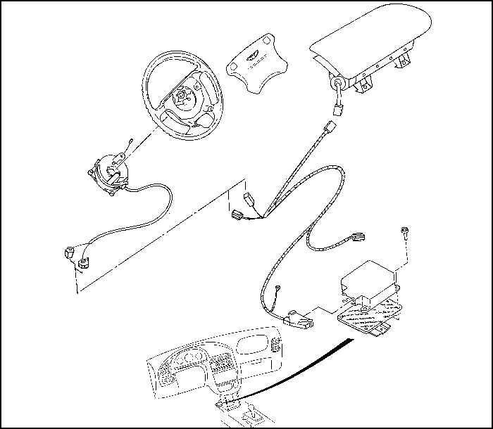

УВЕДОМЛЕНИЕ О ТЕХНИЧЕСКОМ ОБСЛУЖИВАНИИ
КАК ИСПОЛЬЗОВАТЬ ДАННОЕ РУКОВОДСТВО
В данном руководстве описывается ремонт автомобиля EVANDA после аварии. В нем рассматриваются работы, связанные с заменой поврежденных частей кузова.
Внимательно прочтите эти инструкции и ознакомьтесь с ними, прежде чем начинать пользоваться данным руководством.
Примечание: Технические характеристики, расположение жгутов проводов, точки установки страховочных опор и т.д. см. в Руководстве по техническому обслуживанию EVANDA.
СПЕЦИАЛЬНАЯ ИНФОРМАЦИЯ
Осторожно! Указывает на большую вероятность травмы или повреждения оборудования при несоблюдении инструкций.
Примечание: Полезная информация.
Внимание! Подробные описания стандартных производственных процедур, правил техники безопасности и ремонтных операций не приводятся. Обратите внимание, что в данном руководстве приводятся предупреждения и предостережения против определенных способов ремонта, которые могут привести к ТРАВМАМ, повреждению автомобиля или снижению его безопасности. Следует понимать, что подобные предупреждения не могут охватывать все мыслимые способы ремонта, будь то рекомендованные или не рекомендованные DAEWOO, равно как и возможные опасные последствия каждого из таких способов; точно так же DAEWOO не может исследовать все подобные способы. Каждый производящий ремонтные процедуры или использующий ремонтные инструменты, будь то рекомендованные или не рекомендованные DAEWOO, обязан принять все возможные меры, чтобы предотвратить угрозы для личной безопасности и безопасности автомобиля.
Вся информация, приведенная в данном руководстве, основана на последней информации о продукции, имевшейся в нашем распоряжении на момент публикации. Мы оставляем за собой право вносить изменения без предварительного уведомления. Никакая часть данного документа не может быть воспроизведена, сохранена в системе доступа к информации или передана в любой форме и любым способом, механическим, путем фотокопирования, записи на носитель информации или иным образом, без предварительного письменного разрешения издателя. Это касается как текста, так и рисунков и таблиц.
СИСТЕМА ПОДУШЕК БЕЗОПАСНОСТИ (SRS)
Примечание: Выполняя жестяные, покрасочные и ремонтные работы поблизости от мест расположения компонентов системы SRS, соблюдайте следующие меры предосторожности.
- Модуль SDM (модуль датчиков и диагностики) находится под узлом центральной консоли. Избегайте сильных ударов молотком и другими инструментами, ремонтируя переднюю часть рамы и нижнюю часть приборной панели. Не нагревайте эти места, например, газовой горелкой.
- Жгут проводки системы SRS находится под приборным щитком за панелью приборного щитка. Жгут защищен желтой гофрированной трубкой. При ремонте в этой зоне соблюдайте осторожность, чтобы не повредить проводку.
- Просушивая окрашенные участки в окрестности компонентов системы SRS, не нагревайте их до температуры более 80°C (176°F).
- Если необходимо подвергать области вблизи компонентов системы SRS сильным ударам или воздействию высокой температуры, снимите соответствующие компоненты, прежде чем производить ремонт.
- В случае повреждения или деформации каких-либо частей, относящихся к системе SRS, обязательно замените их.
Примечание: Инструкции по снятию и замене частей системы подушек безопасности (SRS) см. в Руководстве по техническому обслуживанию системы SRS.
